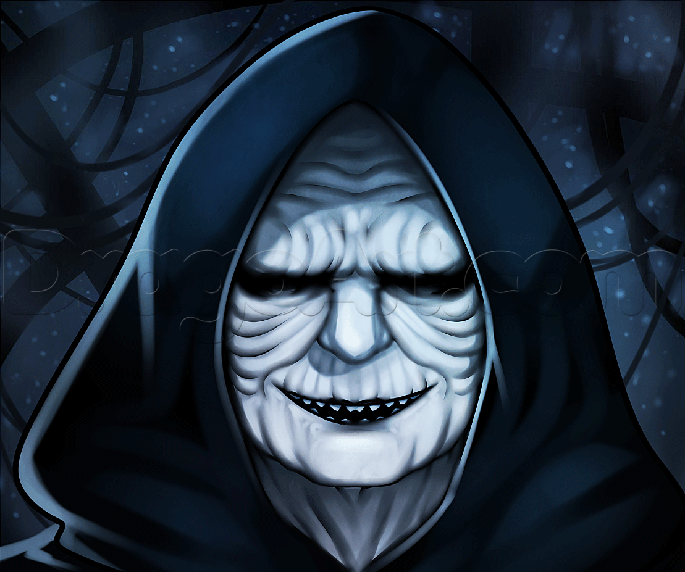

Force Brawl
Characters:

Boba Fett: a rogue bounty hunter. His roots are manadalorian. From a young age he possessed the ability to pull the trigger without emotion.

Exar Kun: a Jedi Knight who fell to the dark side, After thousands of years in isolation, Kun attempted to influence Skywalker's apprentices to do his bidding, successfully turning the young Padawan Kyp Durron to the dark side and severely wounding Skywalker. However, the rest of Skywalker's apprentices banded together and, with the help of the long-dead shade of Vodo-Siosk Baas, banished Kun's spirit and finally put an end to his schemes.
"If you are not with me, then you're my enemy."

Snoke of The First Order: a Force-sensitive humanoid alien who served as the Supreme Leader of the First Order.

Bastila Shan: a Jedi Padawan later Jedi Knight(for a short time even a Sith sorcerous.) During the Jedi Civil War, famed for the advanced use, at a young age, of the rare art of Battle Meditation.
“What greater weapon is there than to turn an enemy to your cause? To use their own knowledge against them?”

Darth Maul: A deadly, agile Sith Lord trained by the evil Darth Sidious, Darth Maul was a formidable warrior and scheming mastermind. He wielded an intimidating double-bladed lightsaber and fought with a menacing ferocity.
"Hate makes us powerful."
Kruhl: a male Sith Lord and assassin in the One Sith Order. Master of deception, subturfuge, and an expert at inflicting a quick painful death.
“Life… death… the one is the same as the other.”
Mara Jade: the wife of Luke Skywalker and mother of Ben Skywalker. While competent, she is also flawed and (always) searching (at times lost) and—dare we say it?—human.
Rey: (Aeria Solo.) speculated to be the forgotten daughter of Leia Organa and Han Solo. Formidable, resourceful, and mysterious. A master of (force) mind games.